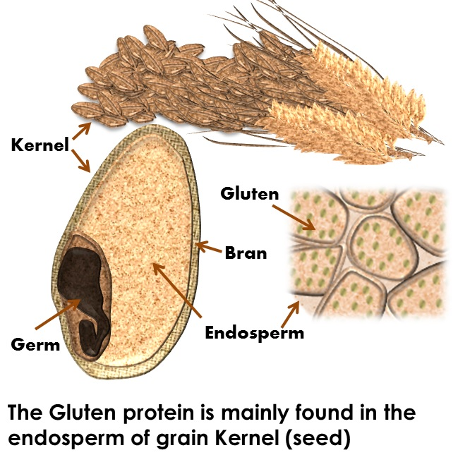

What is Gluten?
What is Gluten?

- Gluten is a general name for the protein found in wheat and wheat byproducts such a barley, rye, semolina, farina, and durum. Gluten acts as a bonding agent, helping foods such as bread maintain their shape. It can be found in almost everything including salad dressings, candy, herbal supplements, hair and skin products, and more unsuspecting foods and body care.
-
Gluten can trigger an immune reaction in the small intestine causing some people to have gluten sensitivity and in others celiac disease, which is an immune response against the wheat protein that involves damaging the lining of the small intestine. The earliest case of celiac disease dates back to a young woman from Cosa, Italy during the 1st century AD. However, celiac was not recognized as a common disorder until the early 1887 by English doctor Samuel Gee. Dr. Gee hypothesized that those affected by wheat and gluten could be cured through their diet, eliminating all foods which contain the gluten protein. Thanks to Dr. Gee's research, celiac awareness groups and national foundations were established in the early 2000s, motivating scientists to find a cure and the food industry to create accommodating food for gluten intolerant folks.